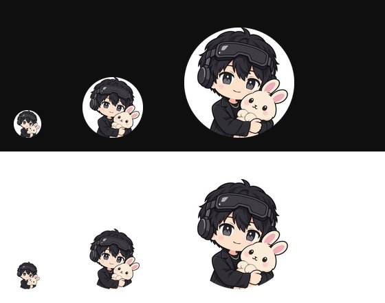
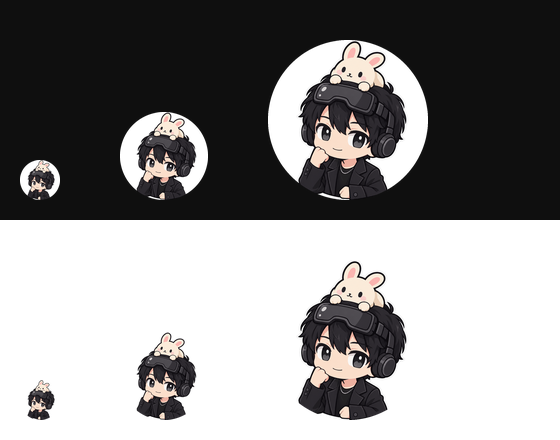

共通：今と同じキャラの絵1枚＋地の色1色（色の数を抑える：Dラボの知見（11/07 の資料「配色10案とぼかし参考v2」に記録。元の記事の URL は見つけ直せていない））。どの絵も目がこちらを向いている。YouTube には正方形（800×800）を上げ、丸く切るのは YouTube。下の小さい丸は、一覧（40px）・88px・160px で、暗い画面と明るい画面に置いたもの。
| 何をしたか | 顔と表情が、一覧の小さい丸（40px）でも分かる大きさにした |
| 使った知見 | 顔があると注目されやすい（Dラボの知見（11/07 の資料「配色10案とぼかし参考v2」に記録。元の記事の URL は見つけ直せていない））／第一印象はほぼ最初の2秒で決まる（Dラボ「面接の心理学２／３」） |
| 確かさ | 白地にしたのは、今のアバターと同じにして変化を小さくするため（私の案） |
小さく表示したとき（上：暗い画面／下：明るい画面）

| 何をしたか | A1 と同じ絵を、深緑の地に |
| 使った知見 | 専門性は黒と深緑（Dラボ「面接の心理学２／３」） |
| 確かさ | 面接の服装の研究。アバターの地の色に当てはめたのは私 |
小さく表示したとき（上：暗い画面／下：明るい画面）

| 何をしたか | A1 と同じ絵を、紺の地と金の細い縁に |
| 使った知見 | 紺は親しみ・黒は強さ／黄（金）は暗い地で読みやすい（Dラボの知見（11/07 の資料「配色10案とぼかし参考v2」に記録。元の記事の URL は見つけ直せていない）） |
| 確かさ | 金の縁は私の案 |
小さく表示したとき（上：暗い画面／下：明るい画面）

| 何をしたか | 今のアバターと同じ絵で、顔とこはるんが丸いっぱいになるよう寄った |
| 使った知見 | 評価は際立った1つの特徴で決まる（ハロー効果・Dラボ「面接の心理学２／３」）→ 頭の上のこはるんを、見分ける特徴にする |
| 確かさ | こはるんがほかのチャンネルと見分ける特徴になる、というのは私の考え（未確認） |
小さく表示したとき（上：暗い画面／下：明るい画面）

| 何をしたか | 目がこちらを見ているのが、小さくても分かるように |
| 使った知見 | 目をよく見る人は知能が高い（Dラボ「面接の心理学２／３」・Dラボ「有能な人に学ぶアイコンタクトの心理学」（題名のみ確認））／黄色はコミュニケーションの色（Dラボの知見（11/07 の資料「配色10案とぼかし参考v2」に記録。元の記事の URL は見つけ直せていない）） |
| 確かさ | 髪の上が少し切れる。目線の効き目は人の研究で、絵に当てはめたのは私 |
小さく表示したとき（上：暗い画面／下：明るい画面）

暗い画面の一覧（40px）では、黒い髪と服が深緑・紺の地（A2・A3）に沈みやすい。白いふちで輪郭は残る。どの知見も人の印象の研究で、アバターでの効果（登録率など）は確かめていない。